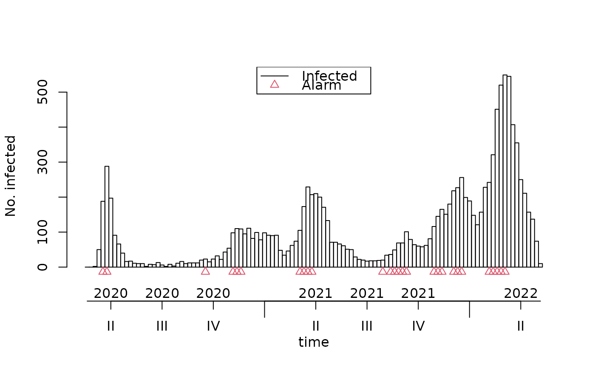

Determine the short term trend of a timeseries
Source:R/short_term_trend_sts_v1.R
short_term_trend_sts_v1.RdThe method is based upon a published analytics strategy by Benedetti (2019) <doi:10.5588/pha.19.0002>. This function has been frozen on 2024-06-24. It is designed to use sts
Usage
short_term_trend_sts_v1(sts, control = list(w = 5, alpha = 0.05))Arguments
- sts
Data object of type sts.
- control
Control object, a named list with several elements.
- w
Length of the window that is being analyzed.
- alpha
Significance level for change in trend.
Examples
d <- cstidy::nor_covid19_icu_and_hospitalization_csfmt_rts_v1
d <- d[granularity_time=="isoyearweek"]
sts <- surveillance::sts(
observed = d$hospitalization_with_covid19_as_primary_cause_n, # weekly number of cases
start = c(d$isoyear[1], d$isoweek[1]), # first week of the time series
frequency = 52
)
x <- csalert::short_term_trend_sts_v1(
sts,
control = list(
w = 5,
alpha = 0.05
)
)
plot(x)
